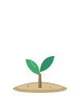
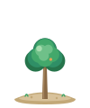
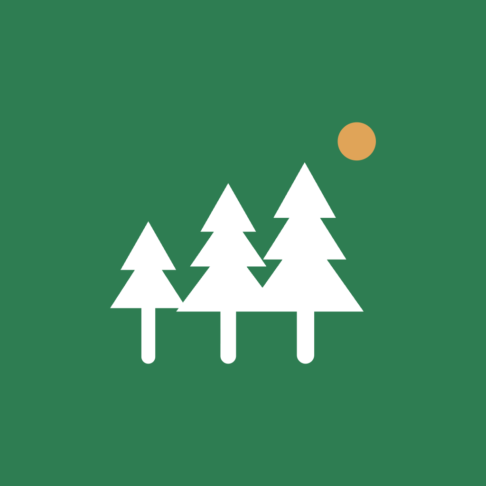
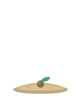
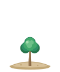
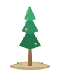
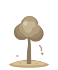
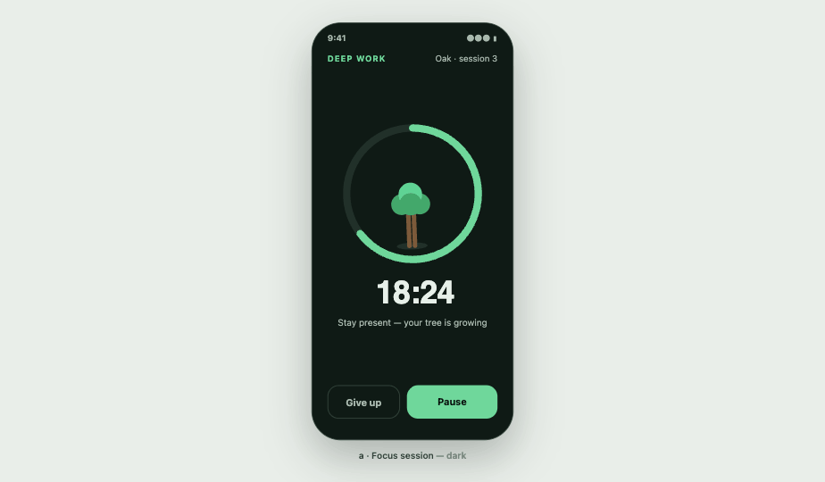

Why Grovely exists
Focus apps treat attention as a solo discipline. Grovely treats it as something you cultivate with people you like. One tree grows while you stay present; a whole grove grows when your circle shows up together.
Make deep focus feel less like discipline and more like tending a garden — with friends.
For students and knowledge workers (18–35) who focus better together. Where solo timers reward willpower, Grovely rewards showing up for your circle — 6 to 12 people, one shared grove, a friendly weekly league.
Nature with lightness. Never clinical, never a productivity drill sergeant.
Plant. Grow. Grove.
Three verbs carry the whole product. Every screen, notification and marketing line should map to one of them.

Pick a species, set the timer, put the phone down. Every session begins as a seed with a promise attached.

Stay present and the tree grows in real time. Leave early and it gently withers — a soft consequence, never a punishment. Finished trees join your personal garden.

The differentiator. Focus live with your circle of 6–12 and a shared grove blooms — one tree per person, growing side by side. A weekly league keeps it warm, not cutthroat.
"8 of 12 focusing now" is the most important sentence in the product. Presence — seeing your people focus in real time — is what no solo timer can copy. Design for that feeling first.
A little grove under the sun
Three pines of different heights sharing one ground — people at different stages, growing together — with a small sun keeping watch. The wordmark is Bricolage Grotesque 700, tightened.
Below 24 px, drop the sun dot and use the trees alone. Toggle clear-space guides in Tweaks.
Never do this
On the home screen

#2E7D52Leaf leads, sun accents
Light mode is the garden by day; dark mode is the focus session at night. Every text-on-fill pairing shown here clears WCAG AA (4.5:1 body, 3:1 large type).
A voice with roots, a body that works
Quirky enough to feel alive, sturdy enough to trust. Weights 500–800; tracking −2% to −3.5% at display sizes.
Humanist, warm, quietly legible at 13–17 px. Weights 400–700; never tracked tighter than −1%.
H1 · 32/700H2 · 23/600Title · 17/600Body · 15/400Label · 12.5/700A garden you can grow
One style — organic soft: layered flat circles, no outlines, a shared sandy ground blob. Six species, each drawn across every growth stage, so a garden always reads as one hand.

seed
saplingmatureOak
Pine Birch
Birch Willow
Willow Round bush
Round bush Cherry ✦ seasonal
Cherry ✦ seasonal
left early · witheredstayed present · thrivingWithered trees keep the same silhouette in muted earth tones — melancholy, not gruesome. They stay in the garden as honest history.
flutter_svg-safe).A gardener, not a coach
Grovely speaks like a friend who gardens: observant, warm, a little playful. We narrate growth, we never audit performance.
"Your oak grew 25 minutes taller."
"Session complete. +25 XP."
"This one withered. The soil's still good — plant another?"
"You killed your tree. Streak lost."
"8 friends are focusing right now. Pull up a patch of soil."
"You're falling behind your circle!"
"Morning Sprinters grew 412 minutes of forest this week 🌱"
"RANK UP! You crushed Library Owls."
The identity in motion
Dark for the focus session, light for the gardens. Tokens map 1:1 to the palette above — nothing on these screens is off-book.



Everything ships in brand/
brand/ ├── brand-book.html ← this document ├── tokens.json ← light/dark + type + radius ├── logo/ ← wordmark · symbol · mono (SVG) ├── icon/ ← 1024 icon + adaptive fg (PNG) ├── trees/ ← 6 species × all stages (SVG) └── mockups/ ← reference PNGs
<use>; text in curves; direct fills; no fixed px dimensions.